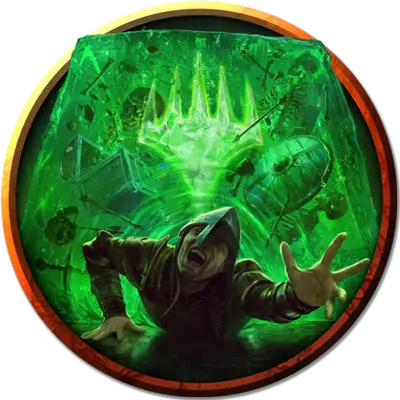

Гигантский студенистый куб
Giant Gelatinous Cube
Громадная Слизь, без мировоззрения

Класс Доспеха 6
Хиты 84 (8к10 + 40)
Скорость 15 футов
| мод | спас | ||
|---|---|---|---|
| СИЛ | 14 | +2 | +2 |
| ЛОВ | 3 | −4 | −4 |
| ТЕЛ | 20 | +5 | +5 |
| мод | спас | ||
|---|---|---|---|
| ИНТ | 1 | −5 | −5 |
| МДР | 6 | −2 | −2 |
| ХАР | 1 | −5 | −5 |
Иммунитет к состояниям сбивание с ног, очарование, ослепление, истощение, испуг, глухота
Чувства слепое зрение 60 футов (слеп за пределами этого радиуса), пассивное Восприятие 8
Опасность 2 (450 опыта)
Бонус мастерства +2
Особенности
Куб слизи. Куб занимает все свое пространство. Другие существа могут входить в его пространство, но делающие это существа подвергаются его Поглощению, и спасбросок совершают с помехой.
Существа внутри куба видны, но обладают полным укрытием.
Существо в пределах 5 футов от куба может действием вытянуть существо или предмет из куба. Для этого оно должно преуспеть в проверке Силы Сл 12, и в любом случае оно получает 10 (3к6) урона кислотой.
Куб может вместить в себя до девяти существ Большого размера или тридцать шесть существ Среднего размера и меньше одновременно.
Прозрачный. Даже если куб находится рядом, требуется проверка Мудрости (Восприятие) Сл 15, чтобы обнаружить куб, который не перемещается и не атакует. Существо, пытающееся войти в пространство куба, не зная о его присутствии, захватывается им врасплох.
Увеличенный. Куб совершает с преимуществом проверки и спасброски Силы. Если куб сжимается до нормального размера, все существа, которые он больше не может в себя вместить, выкидываются в незанятое вокруг него пространство.
Действия
Мультиатака. В свой ход куб может совершить до четырёх атак ложноножками.
Ложноножка. Рукопашная атака оружием: +4 к попаданию, досягаемость 5 футов, одно существо. Попадание: 10 (3к6) урона кислотой.
Поглощение. Куб перемещается на расстояние, не превышающее его скорость. При этом он может входить в пространство существ с размером не больше Большого. Каждый раз, когда куб входит в пространство существа, это существо должно совершить спасбросок Ловкости Сл 12.
При успешном спасброске существо выбирает, оттолкнуться на 5 футов от куба или в сторону от него. Если существо решило не отходить, оно получает последствия проваленного спасброска.
При провале куб входит в пространство существа, которое получает 10 (3к6) урона кислотой и становится поглощенным. Поглощенное существо не может дышать, является опутанным, и получает 21 (6к6) урона кислотой в начале каждого хода куба. Когда куб перемещается, поглощенное существо перемещается вместе с ним.
Поглощенное существо может попытаться освободиться, совершая действием проверку Силы Сл 12. При успехе существо освобождается и входит в пространство на свой выбор в пределах 5 футов от куба.
Описание
Студенистый куб размером сторон в 30 футов пойман в помещении как в ловушку. Когда персонажи впервые войдут в помещение, монстр находится в северо-восточном углу. В его центре плавает заключенный в стеклянную оболочку череп дварфа. Любой персонаж, преуспевший в проверке Мудрости Сл 15 (Восприятие), поймёт, что череп не левитирует, а подвешен внутри огромного студенистого куба.
Заклинание обнаружение магии [detect magic] покажет вокруг черепа принадлежавшего дуэргару, ауру магии преобразования. Халастер сохранил в черепе способность дуэргаров к увеличению, тем самым наделив этой возможностью студенистый куб. Стеклянная оболочка черепа защищает его от пищеварительной кислоты куба.
Извлечение черепа из студенистого куба приведет к тому, что куб сожмется до своего обычного размера (сторона - 10 футов). Череп не обладает никакими магическими свойствами, кроме способности увеличивать студенистый куб (и возможно, по вашему усмотрению, другие слизи).